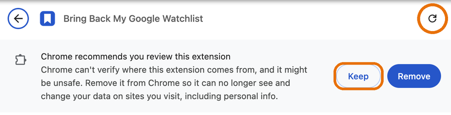

How to update
The extension was installed by hand, so it can't update itself. Updating takes about a minute, and your list stays as it is.
Latest version: …
Don't click “Remove” on the extension. Removing it deletes the list stored in that browser. If you've signed in to sync, signing in again brings it back; otherwise it's gone.
-
Download the new version.
Unzip it: on a Mac, double-click it; on Windows, right-click it and choose Extract All. You get a folder called
bring-back-my-google-watchlist. -
Replace your old folder with the new one. Put the new folder where the old one is (often your Documents folder), with the same name.
On a Mac, drag it there and choose Replace. On Windows, delete the old folder first, then move the new one in.
Can't remember where the old folder is? Click the extension's icon, then Manage extension, and look for Source on that page. -
Reload the extension. Click the extension's icon in your toolbar, then Manage extension at the bottom. Its settings page opens; click the circular arrow ↻ at the top right.

If Chrome shows “Chrome recommends you review this extension”, click Keep. Chrome says this about every extension that isn't from its store.
Or typechrome://extensionsin the address bar (Brave:brave://extensions, Edge:edge://extensions) and click ↻ on the extension's card. - Check it worked. The card now shows the new version number, and the orange NEW badge on the toolbar icon disappears. If it's still there, reload any open Google tabs.
Something went wrong?
- The card shows an error after reloading: the folder may be the zip's outer folder or an unfinished unzip. Delete it, unzip the download again, and repeat step 2.
- Your list looks empty: if you're signed in to sync, open the extension's icon and click Sync now. If not, you probably loaded a fresh copy instead of replacing the old folder. Put the old folder back and reload.
- Still stuck? Open an issue on GitHub or email kaizar.raja@gmail.com.